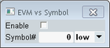

The measurement provides some softkey/hotkey combinations which have no equivalent in the configuration dialog. Most of these hotkeys provide display configurations (like diagram scaling). They are self-explanatory and do not have any remote-control commands assigned.
The remaining softkeys > hotkeys are described below. Most of them are available for multi-evaluation, PRACH and SRS measurements.
The softkeys "Signaling Parameter" and "LTE Signaling" are displayed only if the combined signal path scenario is active and are provided by the "LTE Signaling" application selected as master application. See also "Scenario = Combined Signal Path".
The softkeys "ARB / List Mode" and "GPRF Generator" are displayed only if the standalone scenario is active and the generator shortcut is enabled, see "Shortcut Configuration".
While one of the signaling or generator softkeys is selected, the "Config" hotkey opens the configuration dialog of the generator or signaling application, not the configuration dialog of the measurement.
Selects the view types to be displayed in the overview. The R&S CMW does not evaluate the results for disabled views. Therefore, limiting the number of assigned views can speed up the measurement.
Remote command:The hotkey is only available in the view "Error Vector Magnitude". It opens the following dialog box.

The checkbox enables the measurement of EVM vs. modulation symbol results. They are shown in the lower diagram in the "Error Vector Magnitude" view.
"Symbol#" selects the SC-FDMA symbol to be evaluated. "low" and "high" select between EVMl and EVMh results.
For SRS signals, the low/high setting is irrelevant. The FFT processing window begins at the center of the cyclic prefix, not at the low or high position.
Remote command:Provides access to the most essential settings of the "LTE Signaling" application.
Remote command:Use the commands of the signaling application.
Select this softkey and press [ON | OFF] to turn the downlink signal transmission on or off. Alternatively, right-click the softkey.
Press the softkey two times (select it and press it again) to switch to the signaling application.
Remote command:Use the commands of the signaling application.
Provides access to the most important ARB and list mode settings of the GPRF generator.
Remote command:Use the commands of the GPRF generator.
Select this softkey and press [ON | OFF] to turn the GPRF generator on or off. Alternatively, right-click the softkey.
Press the softkey two times (select it and press it again) to switch to the generator application.
The hotkeys assigned to this softkey provide access to the most important GPRF generator settings.
Remote command:Use the commands of the GPRF generator.

This setting is located in the configuration tree. It is only visible if the combined signal path scenario is active.
The checkbox suppresses a warning that is displayed if the "... Signaling" softkey is selected and the cell signal is on and you press [ON | OFF]. The warning asks you whether you really want to switch off the cell signal.
Remote command:n/a